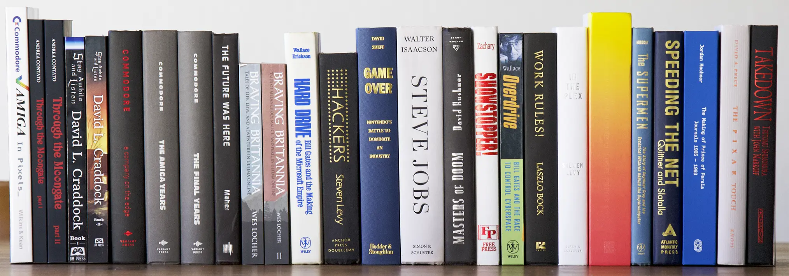
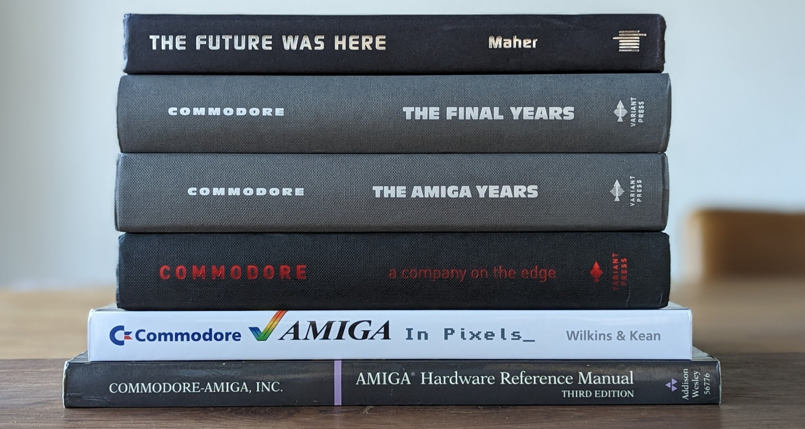

Apr 1, 2023
The Joy of Computer History Books
When I was a child, growing up in the 80s, I read pretty much anything I could find about computers. There was not a lot translated to French. I even read the MS-DOS Version 5 Reference Guide. The cover was dry and the content was not very tasty either.
To be fair, history was still in the making and there was not much to write about. But the least I can say is that time has made it up to me. There are so many good books now. Reading them is a great source of joy.
My favorite computer books
My favorite books
To make it to my list of favorites, a book should have at least one of these attributes.
- Being well researched. The author will have gathered multiple sources to confirm events.
- Not fall into the cult of personality ("looks at this genius") trap. Dictated autobiographies make me cringe. Nobody is perfect and if the work genuinely mentions mistakes, it is a good sign.
- Allow me to live something I did not experience (e.g: Ultima Online which France internet prices forbade).
The current list
Amiga
Before moving to PC. I had an Atari 520 STe. I completely missed the beautiful Amiga. Luckily this is a field particularly well covered.

Not an history book but noteworthy nonetheless, the "Hardware Reference Manual" is a beauty.
Origin System Inc (OSI)
Back in the 90s, OSI was the coolest video-games company. Even their motto "We Create Worlds" rocked.
- I never understood how they could end up being acquired. Even less how they could end up being shut down. The MoonGate (1, 2) series explains it.
- I was never able to experience Ultima Online for financial reasons. All I could do was drool over screenshot in magazines. The tales of Braving Britannia (1, 2) explains it like you just got PKed on day one.
Computer Culture
Video-games
- Diablo I and II. I wrote a lot about video-games but I never entered the field as a professional. The tales of Condor/Blizzard North reassured me about my choice. The first volume of Stay a While and Listen uses an experiment layout which I hated. The second tome uses a narrative structure that is Masters of Doom level masterpiece which I adored.
- Prince of Persia. Jordan Mechner's diary from his Karateka and PoP days felt genuine and relatable.
- Wolfenstein 3D/Doom/Quake. No need to present the ultra-classic book. If I could pick only one in this list, it would be that one. This is the work that changed my life and made me strive for excellence.
- Street Fighter series. There is next to no literature about the making of the series. I never understood why, especially compared to everything written in American companies. Like a Hurricane is a collection of interviews from the people who made, sold, and designed Street Fighter from its beginning.
Companies
- Apple. The fascinating story of Steve Jobs. Honorable mention to The Little Kingdom whose only fault is to have been published too early (1984).
- Nintendo. How the Japanese company took over the world and stayed on top of it.
- Cray. You cannot look at a Cray I and not want to learn more about the genesis of these super computer. The story did not disappoint.
- The Pixar Touch. The inspiring story of the company that pioneered Animated Feature.
- Google. Two great books, In the Plex and Work Rules.
- Microsoft. The first part, HardDrive, covers the origins of the company and its founders. The same author covers the rise of Internet Explorer in Overdrive. The Netscape point of view is in Speeding the Net. The making of Windows NT kernel is in Showstoppers.
*